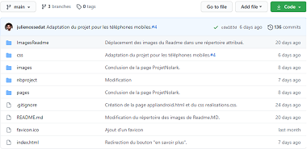

VCS 2021/Portfolio
Cette activité m'a permis d'apprendre à utiliser Boostrap, et à véritablement personnaliser mon Portfolio de bout en bout, en suivant un TP qui m'a appris notamment l'utilisation du versioning, et à me familiariser avec le site web Github.

Apprentissage du concept de versioning, et familiarisation avec le site Github.

Personnalisation de mon Portfolio en ajoutant des pages, et en modifiant les couleurs et le background.

Mise en situation de travail à plusieurs sur le même projet.